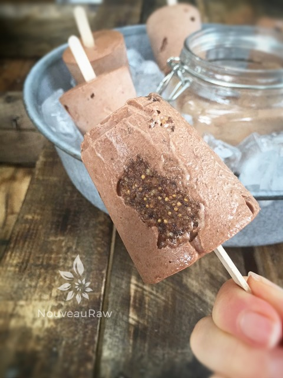

Chocolate Hazelnut Crumble Banana Ice Cream
~ raw, dairy-free, gluten-free ~
Banana-based ice creams are about the easiest raw ice creams that you can make. They are not heavy with nuts, and you can make it whenever the ice cream bug bites! Just be sure to keep ripe, peeled, bananas in the freezer. From there you can create any flavor of ice cream.
Hazelnuts are also known as cobnuts or filberts. I spent most of my life thinking that these were all different types of nuts. :) In the raw form hazelnuts are more mellow with a hint of sweetness but intensifies when they are roasted.
I share this just in case you are used to eating hazelnuts roasted. Like almost all nuts, they have a high-fat content, which means they’ll go rancid pretty quickly if not refrigerated so keep them stored either in the fridge or freezer.
Healthwise, they are rich in protein, complex carbohydrates, fiber, calcium, and Vit. E. Like other tree nuts, they don’t contain cholesterol. Over 80% of the total fat in hazelnuts is monounsaturated.
When you make your own ice creams at home, you have the ultimate control in how you present it. Now, you could go the traditional route and place the ice cream in one large freezer-safe container, or you could use individual mason jars, or you could use popsicle molds.
To be honest, I tend to do all three with just one batter. I don’t know why but for some reason it makes me feel like I am eating three different ice creams over time. It just spices things up a bit. In the photos, you will see that I used 3 oz Dixie cups. These are a lot of fun because they provide portion control and kids love them. Time to get ready and enjoy this recipe. :)
5 1/4 pints
Hazelnut cookie crumbles:
- 1 1/2 cup raw hazelnuts, soaked 4+ hours
- 2 Tbsp raw cacao powder
- 1 tsp ground cinnamon
- 1/4 tsp Himalayan pink salt
- 1 cup Medjool dates, pitted or dried figs
Chocolate banana ice cream:
- 8 cups diced frozen banana
- 1/2 cup raw cacao powder
- 1/2 cup raw honey
Preparation:
Hazelnut cookie crumbles:
- Soak, drain, and rinse the hazelnuts. Blot them dry with a paper towel. Place in the food processor, fitted with the “S” blade.
- Add the cacao powder, cinnamon, and salt. Pulse until the nuts break down to a crumble.
- Add the dates and process until the batter creates a ball within the machine.
- Place in a small bowl and set aside while you make the chocolate banana ice cream.
Chocolate banana ice cream:
- Place the frozen banana slices, cacao, and honey in the food processor, fitted with the “S” blade. Process until creamy.
- Transfer to a bowl and hand mix in the hazelnut cookie crumble.
- Place in a freezer-proof container and freeze. Remove from the freezer 10-15 minutes before eating. You can also eat this right away as delicious soft-serve ice cream.
Freezing Suggestions for Ice Cream:
-
Use an ice cream machine. Follow the manufactures directions.
-
Freeze in popsicle molds or 3 oz Dixie cups with a popsicle stick inserted.
-
-
Store the ice cream in the very back of the freezer, as far away from the door as possible. Every time you open your freezer door you let in warm air. Keeping ice cream way in the back and storing it beneath other frozen-sold items will help protect it from those steamy incursions.
-
Ice cream is full of fat, and even when frozen, fat has a way of soaking up flavors from the air around it—including those in your freezer. To keep your ice cream from taking on the odors, use a container with a tight-fitting lid. For extra security, place a layer of plastic wrap between your ice cream and the lid.
-
To soften in the refrigerator, transfer ice cream from the freezer to the refrigerator 20-30 minutes before using. Or let it stand at room temperature for 10-15 minutes.
-
Wish to make your own raw ice cream, wonder what machine I might recommend, and more? Click (
here) to check out the Reference Library!

Oh, there is a whole lotta goodness going on in these Dixie Pops!
© AmieSue.com